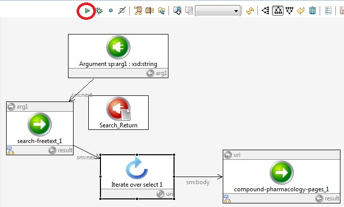

Running the script
We can run the script just as we did before, by selecting a module and clicking the "Run" arrow. Select the Iterate over select 1 module, and click "Run" as shown in the screen shot:

Type in "Sorafenib" when prompted, then "Infer result triples" and click, "Close". As before, you can copy-and-paste from the OpenPHACTS documentation right into a SPARQL Query, e.g.:
SELECT *
WHERE {
?equiv_assay chembl:hasTarget ?equiv_target ;
}
and see the targets associated with the assays in the results.
Next: Running your script as a web service